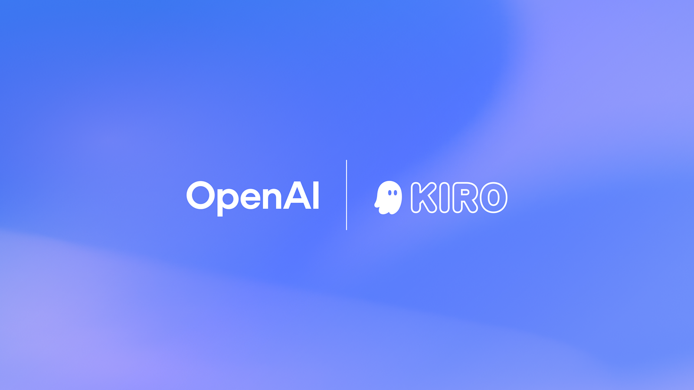

01 OpenAI 게시일 2026.08.24
OpenAI, Kiro에 GPT-5.6 넣었다

이번 소식은 새 모델 공개보다, 개발 도구 안에 모델을 어떻게 녹여 넣었는지에 가깝다. Kiro는 개발자가 요구사항을 정리하고, 설계를 만들고, 코드를 검토하는 흐름을 관리하는 도구다. OpenAI는 여기에 GPT‑5.6을 넣어 복잡한 개발 작업을 더 적은 수정으로 끝내겠다고 밝혔다.
핵심 브리핑
GPT‑5.6 모델군이 이제 Kiro에서 동작해 팀이 소프트웨어를 계획하고 만들고 검토하고 테스트하는 데 쓸 수 있다. Kiro는 추상적인 요구사항을 구현 계획과 기술 설계, 실제 작업으로 바꿔주는 개발 에이전트다. OpenAI는 이 구조가 모델이 팀의 코드베이스와 기준을 더 잘 이해하게 돕는다고 설명했다.
이번 적용 대상에는 Sol, Terra, Luna가 포함된다. OpenAI는 개발자가 토큰당 더 나은 효율로 더 많은 일을 처리할 수 있다고 밝혔다. 복잡한 작업도 필요할 때 바로 수행할 수 있다고 덧붙였다.
- 제품 아이디어와 요구사항을 구조화된 구현 계획으로 바꾼다
- 여러 단계의 코딩 작업을 더 일관되게 처리한다
- 팀 코드베이스와 기존 기준을 문맥으로 사용한다
- 변경 적용 전 주요 지점에서 사람이 검토하고 다듬는다
- 속성 기반 테스트로 구현이 맞는지 점검한다
OpenAI와 AWS는 Kiro 환경과 OpenAI 모델을 함께 최적화했다고 밝혔다. 양사가 테스트한 결과, Terminal-Bench 2.1에서 GPT‑5.6 Terra는 Kiro 안에서 성공 과제를 처리할 때 비용을 약 82% 줄였다. 이 수치는 양사 테스트 결과이며, 비교 기준과 절대 비용은 공개하지 않았다.
주요 트렌드
이번 발표는 고성능 모델을 단독으로 파는 대신, 개발 워크플로 안에 묶어 파는 전략을 보여준다. OpenAI는 Kiro를 통해 모델을 요구사항, 설계, 승인 절차와 연결했다. 개발팀이 범용 채팅창으로 이동하지 않아도 되는 구조다.
파트너십 측면에서도 AWS가 함께 등장했다. 모델 경쟁이 이제는 클라우드 환경 최적화와 운영비 절감 경쟁으로 번지고 있다는 뜻이다. 다만 라이선스 조건과 세부 과금 방식, 각 모델의 역할 분담은 이번 글에서 공개하지 않았다.
업계의 움직임
아직 공개된 반응은 확인되지 않았다.
시사점과 체크포인트
우리 회사가 볼 대목은 모델 성능보다 통제 방식이다. 요구사항, 설계, 승인, 테스트를 한 흐름으로 묶어야 감사 대응과 품질 관리가 쉬워진다.
검토 포인트는 분명하다.
- 개발 표준과 보안 규칙을 AI 문맥에 어떻게 넣을지
- 코드 변경 전 사람 승인 지점을 어디에 둘지
- 테스트 자동화가 추론 결과를 얼마나 걸러낼지
- 비용 절감 수치가 우리 환경에서도 재현되는지
이번 발표에는 성능의 절대값과 가격표가 없다. 벤더와 파트너가 함께 측정한 수치라는 점도 감안해야 한다. 도입 검토 때는 내부 저장소 접근 범위와 로그 보관 방식도 따로 확인할 필요가 있다.
주요 용어
원문 정보
제목: Advancing price-performance for developers with GPT‑5.6 in Kiro
게시일: 2026.08.24
출처 URL: https://openai.com/index/gpt-5-6-in-kiro